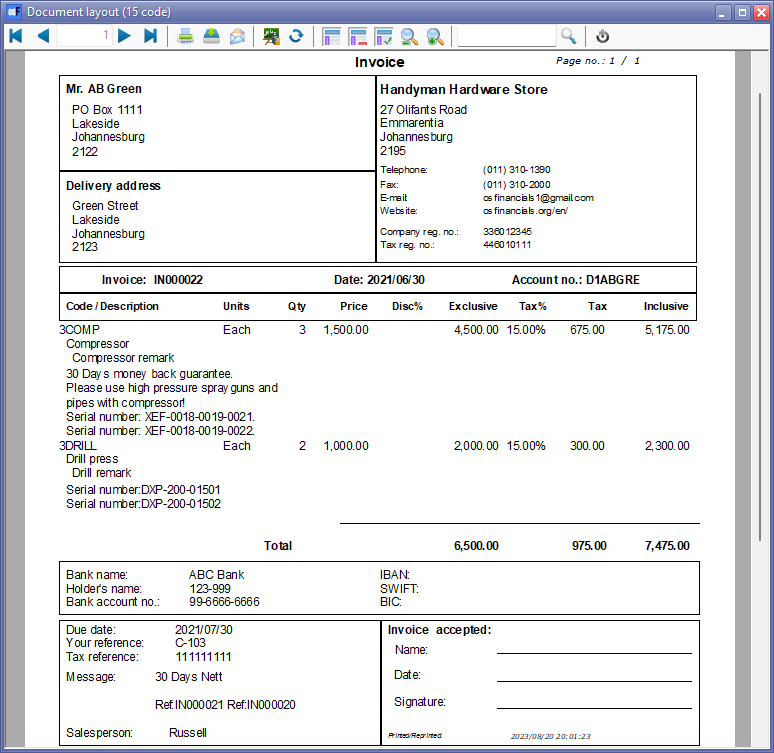
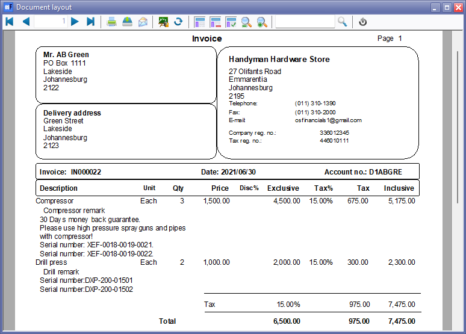

Document layout files - Translatable
The layout files selected for each document type on the Setup → Documents setup menu (Setup ribbon) are the global default layout files that will be used to print documents.
Specific layout files may also be selected on the Default ribbon for:
- Each debtor (customer / client) account by selecting a different layout file in the Layout file 1 (Invoices), Layout file 2 (Credit notes), Layout file 3 (Quotes) in the Debtors.
- Each creditor (supplier / vendor) account by selecting a different layout file in the Layout file 1 (Purchases), Layout file 2 (Supplier return), Layout file 3 (Orders) in the Creditors.
|
|
The global settings will be over-ruled. |

In addition to these settings, you may also select a different layout file when printing documents on the "Layout file" fields of the following options (Default ribbon):
- Documents - Selection screen (Print button)
- Debtors (Documents tab)
- Creditors (Documents tab)
Layout files are stored in the "...\plug_ins\reports\DOCUMENTS\DOCUMENTS" directory. These may be edited using the Reportman (Report designer accessed from the Reports or Setup ribbons).
Layout files have been designed to be displayed in the Language file (Switch language on the Start ribbon). If you change the language, the layout file will be displayed in the selected language.
|
|
Should the correct tax terminology (e.g. Sales Tax, VAT, GST) not be displayed on layout files, you need to select the correct language / country file. |

Document layout files supports all document types
These translatable document layout files includes a versatile and dynamic option that caters to a wide range of language preferences and customisation needs. These translatable document layout files is powered by our language files feature, ensuring seamless translation of content across various languages. Not only does it adapt to the default language of your Set of Books, but it also accommodates debtor and creditor language preferences when they differ from the default.
Changing the Document type name
To change the Document type name for Document layout files which supports all document types. you need to modify the document type names, you can navigate to the Types tab within the "Customize Languages" screen (accessible through the Tools → Customise Language menu on the Setup ribbon).
Labels for Tax terminology will be printed in the selected language or the language associated with the Set of Books or the selected language in the Switch language option on the Start ribbon.
If you need to customise the Tax terminology labels in your selected language, you may change these in the may be modified in the Tools → Customise Language menu on the Setup ribbon).
Examples: Document layout files (Translatable)
The "Layout file", Document layout" and "Document layout (15 code)" document layout files make use of translatable expressions facilitated by language files and settings within osFinancials. These files extract data from various fields input during the document processing stage, establishing connections to tables and expressions in the Database fields to ensure accurate data presentation.
These Document layout files dynamically display the appropriate document type name, whether it's an "Invoice," "Credit note," "Quote," "Purchase," "Supplier return," or "Order", based on the specific type of document being printed. This information is sourced from the "TYPES.SDESCRIPTION" expressions within the document layout.
To modify the document type names, you can navigate to the Types tab within the "Customize Languages" screen (accessible through the Tools → Customise Language menu on the Setup ribbon).
Layout file
The "Layout file" does not print stock codes, but only stock descriptions.

Document layout (15-code) file
The "Document layout file" prints stock codes (of up to 15-digits – Maximum allowed creating stock items) and stock descriptions.

This layout file includes the details of your business bank accounts (for bank account 1) as entered in Setup → Company info menu on the Setup ribbon. You may print the "Company info – Bank accounts" report from the Reports → Company info menu on the Reports ribbon to verify that your banking details are correct. This ensures that accurate and up-to-date banking information is presented on your documents, fostering transparency and professionalism in your financial transactions.
Document layout file

The "Document layout" file does not print stock codes, but only stock descriptions.
Document layout files supports additional languages for Debtors / Creditors
These translatable document layout files are a feature designed to accommodate multiple languages within osFinancials. These files facilitate printing documents in either the chosen language or the default language associated with the Set of Books. Additionally, these translatable document layout files take into account language preferences specified for debtor (customer/client) or creditor (supplier/vendor) accounts, including international ones.
In osFinancials, users have the flexibility to designate a particular language for debtor or creditor accounts:
- Debtors: When a specific language is assigned to a debtor account, osFinancials will print document layout files for sales-related documents (such as invoices, credit notes, quotes, and point-of-sale invoices) in the debtor's preferred language.
- Creditors: If a specific language is set for a creditor account, osFinancials will print document layout files for purchase-related documents (including purchase orders, supplier returns, and orders) in the preferred language of the creditor, whether they are domestic or international.

This feature ensures that financial documents align with the language preferences of both customers and suppliers, enhancing communication and clarity for a diverse range of business interactions and in regions with multiple languages. For instance, in a country like South Africa, documents can be generated in languages like Afrikaans or English..